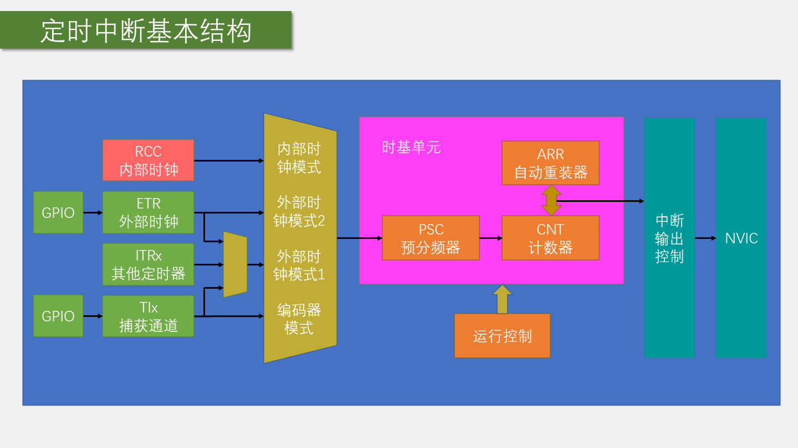
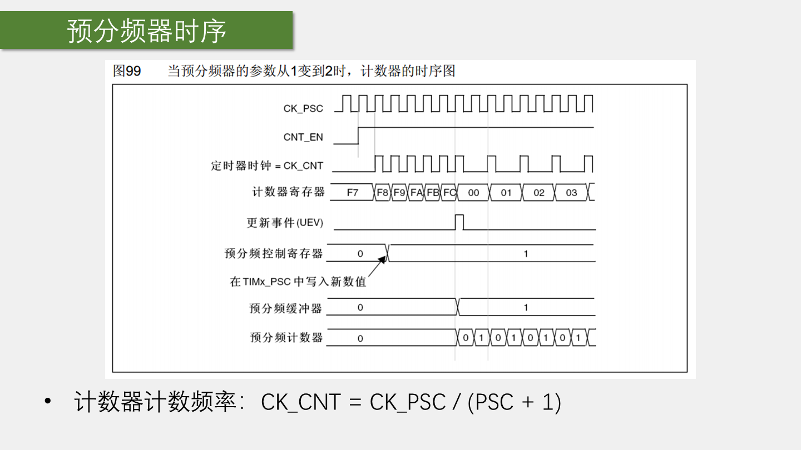
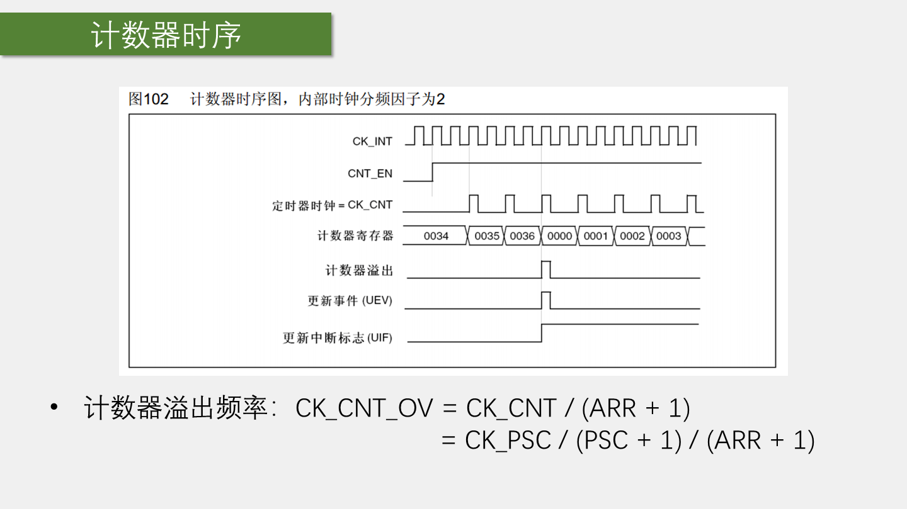
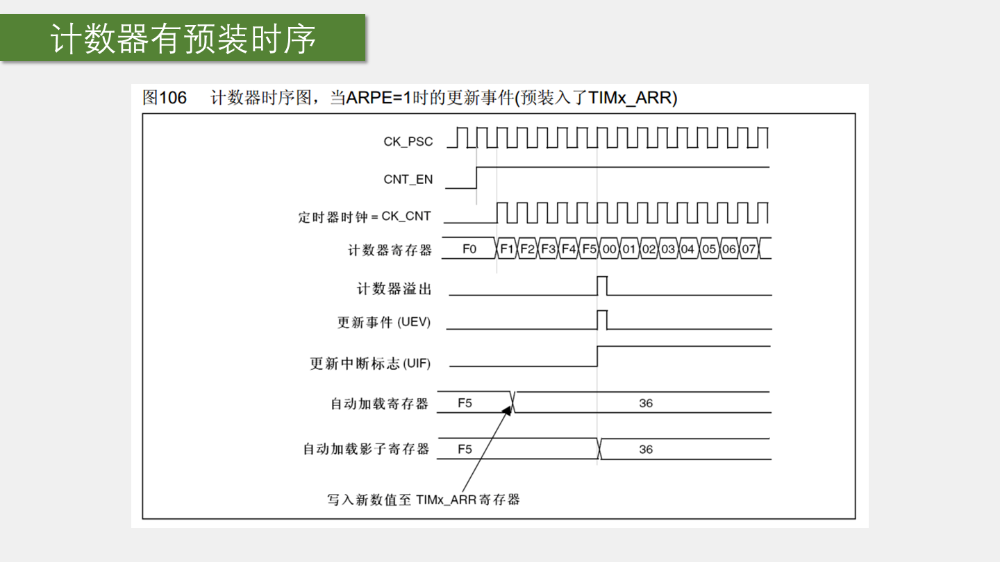

这一课要解决的问题
本课目标
读完你能：画出时基单元的三个部件并说出各自作用；由任意目标定时算出 PSC 和 ARR；解释影子寄存器为什么存在、什么时候会坑你；独立配出 1 秒定时中断并让 LED 按秒闪烁。
这一课是整个课程的核心。后面 s10 的 PWM、s11 的输入捕获和编码器，全都建立在这一课之上。如果只能学透一课，就学这课。
1. 定时器的本质：一个会数数的计数器
抛开所有框图，定时器只做一件事：
数时钟脉冲，数到设定值就报告一声，然后重新开始数。
所以它本质上就是个计数器。你给它一个频率已知的时钟，它就知道"数了多少个 = 过了多长时间"。
72MHz 意味着每秒有 72,000,000 个脉冲。
- 数 72 个 → 1μs
- 数 72,000 个 → 1ms
- 数 72,000,000 个 → 1 秒
但计数器只有 16 位，最大只能数到 65535。要数到 7200 万根本装不下。
于是有了分频和重装：
- PSC（预分频器）：把 72MHz 先降下来，比如降到 10kHz。
- ARR（自动重装寄存器）：计数器数到这个值就清零重来，比如 10000。
- 结果：10kHz 数 10000 次 = 1 秒。
两个 16 位数一乘，能表示的范围就大了 65536 倍。
2. 时基单元：三个部件
三个部件逐个说：
PSC（Prescaler，预分频器） 把输入时钟分频。写 N 表示除以 N+1。
- PSC = 0 → 不分频，72MHz
- PSC = 1 → 2 分频，36MHz
- PSC = 71 → 72 分频，1MHz
为什么是 N+1 而不是 N？ 因为 PSC=0 必须表示"不分频"（否则就变成除以 0 了）。这是硬件设计的妥协，你要记住这个 +1。
CNT（Counter，计数器） 每来一个分频后的时钟就加 1（向上计数模式）。到 ARR 后清零。
ARR（Auto-Reload Register，自动重装寄存器） 计数目标。CNT 数到 ARR 时产生更新事件，然后 CNT 清零重新开始。
同样要注意：从 0 数到 ARR，一共是 ARR+1 个数。所以周期是 ARR+1。
核心公式（必须背下来）
其中 （s5 讲过，所有定时器都是 72MHz）。
反推也是常考的：
3. 算一遍：1 秒定时
目标：每 1 秒产生一次中断。
所以 。
但两个数都必须在 1~65536 之间。7200万怎么拆？
- → PSC = 7199（计数频率 10kHz）
- → ARR = 9999（数 10000 次 = 1 秒）
验证：； → 1 秒。✓
7200 × 10000 是唯一解吗
不是。只要乘积等于 7200 万，且每个因子不超过 65536，都合法：
| PSC | ARR | 计数频率 | 备注 |
|---|---|---|---|
| 7199 | 9999 | 10 kHz | 常用，计数频率适中 |
| 719 | 99999 | — | ❌ ARR 超 65535，不合法 |
| 71 | 999999 | — | ❌ 不合法 |
| 6553 | 10986 | ≈ 10.99 kHz | 合法，但数字不整 |
| 9999 | 7199 | 7.2 kHz | 合法，反过来也行 |
选哪个看需求：
- 需要"计数频率高、分辨率细"（比如测脉宽）→ PSC 小一些。
- 需要"定时长、计数频率低"（比如心跳灯）→ PSC 大一些，让 CNT 变化慢。
4. 最大定时时间：59.65 秒是怎么来的
PSC 和 ARR 都是 16 位，最大填 65535，即分频系数和周期数都是 65536。
接近一分钟。这就是为什么"单个定时器最多只能定时 59 秒多"。
要更长的定时怎么办？ 三个办法：
- 软件计数：定时器 1 秒中断一次，中断里
cnt++，数到 60 就是 1 分钟。最简单，最常用。 - 定时器级联：TIM3 的更新事件输出到 TIM2 的时钟输入，两个 16 位串成 32 位，理论能到 8000 多年。
- 用 RTC：RTC 有独立的 32.768kHz 晶振和预分频，天生适合做长时间计时。
为什么不做成 32 位计数器
成本和功耗。16 位够绝大多数场景用（59 秒），需要更长就软件补。这是典型的"够用就好"的芯片设计取舍。
对比一下：STM32F4 的定时器也是 16 位，但主频 168MHz，最大定时只有 25 秒——因为频率高了，同样位数能数的绝对时间反而短。
5. 影子寄存器：一个反直觉的设计
这是本课最难的点，但面试很爱问"为什么要预装载"。
先看现象。假设定时器正在跑，ARR = 1000，你突然把 ARR 改成 500。会发生什么？
如果没有影子寄存器：CNT 当前是 800，目标突然变成 500。CNT 已经超过目标了，但它只会加不会减，所以要一路加到 65535 回绕，再加到 500 才触发更新——中间白等了 6 万多个周期。
有影子寄存器：你写的 500 只是进了"预装载寄存器"，真正起作用的"影子寄存器"还是 1000。等这一轮数完（CNT 到 1000）、产生更新事件时，500 才被复制进影子寄存器，下一轮才生效。
HAL 里对应的字段由 CubeMX 写进 Core/Src/tim.c：
文件：Core/Src/tim.c 的 MX_TIM3_Init()（CubeMX 生成，不用手写）
void MX_TIM3_Init(void)
{
TIM_ClockConfigTypeDef sClockSourceConfig = {0};
TIM_MasterConfigTypeDef sMasterConfig = {0};
htim3.Instance = TIM3; /* htim3 定义在本文件顶部 */
htim3.Init.Prescaler = 7199; /* 7200 分频：72MHz → 10kHz */
htim3.Init.CounterMode = TIM_COUNTERMODE_UP;
htim3.Init.Period = 9999; /* ARR：数 10000 次 → 1 秒 */
htim3.Init.ClockDivision = TIM_CLOCKDIVISION_DIV1;
htim3.Init.AutoReloadPreload = TIM_AUTORELOAD_PRELOAD_ENABLE; /* ARPE=1，开影子寄存器 */
if (HAL_TIM_Base_Init(&htim3) != HAL_OK) { Error_Handler(); }
sClockSourceConfig.ClockSource = TIM_CLOCKSOURCE_INTERNAL; /* 用内部 72MHz */
if (HAL_TIM_ConfigClockSource(&htim3, &sClockSourceConfig) != HAL_OK) { Error_Handler(); }
sMasterConfig.MasterOutputTrigger = TIM_TRGO_RESET;
sMasterConfig.MasterSlaveMode = TIM_MASTERSLAVEMODE_DISABLE;
if (HAL_TIMEx_MasterConfigSynchronization(&htim3, &sMasterConfig) != HAL_OK) { Error_Handler(); }
}
改成 TIM_AUTORELOAD_PRELOAD_DISABLE，改 Period 就立刻生效，会踩 §5 说的坑。
为什么是 7199 和 9999：两个寄存器都是"写 N 表示 N+1"，写 7200 就变成 7201 分频，1 秒会慢 0.014%。这种误差示波器都未必看得出来，但做秒表一天就差几分钟。
AutoReloadPreload 填 ENABLE 只影响"运行中改 ARR"的行为：关掉后，CNT 已经超过新 ARR 时会绕一整圈才更新，现象是一次超长周期（呼吸灯突然闪一下）。
影子寄存器的意义：**同步**
它让"参数修改"和"周期边界"对齐，避免在周期中间改参数造成畸形的波形。
哪些寄存器有影子？
- PSC：有，且强制使用（不能关）
- ARR：有，可开关（
ARPE位） - CCR（比较寄存器，PWM 用）：有，可开关（
OCxPE位）
这三个覆盖了绝大多数"运行中要改参数"的场景。
一个实际会踩的坑
你想做呼吸灯，每 10ms 改一次 CCR。如果 CCR 的预装载没开，改了立刻生效——理论上没问题。
但如果 ARR 也经常改（比如做变频），且 ARPE=0，就会出现：CNT 已经跑到 900，你把 ARR 从 1000 改成 500，CNT 要继续加到 65535 再回绕才能到 500，中间一个超长周期，LED 会闪一下。
现象就是"调亮度时偶尔闪一下"，非常难查。所以运行中要改的参数，一律开预装载。
6. 三种计数模式
| 模式 | 行为 | 用途 |
|---|---|---|
| 向上计数 | 0 → ARR → 清零，循环 | 最常用，定时中断、PWM |
| 向下计数 | ARR → 0 → 重装 ARR，循环 | 特殊 PWM 相位需求 |
| 中央对齐 | 0 → ARR → 0，双向 | 电机控制（对称 PWM，谐波更小） |
F103 的基本定时器 TIM6/7 只支持向上，通用定时器 TIM2/3/4 和高级定时器 TIM1 支持全部三种。
但 C8T6 没有 TIM6/7——它只有 TIM1（高级）+ TIM2/3/4（通用）。这点第 1 课提过，选型时要注意。
中央对齐为什么电机用
向上计数时，PWM 在每个周期开头有个"跳变"，谐波集中在开关频率附近。中央对齐模式下，计数器上下走，PWM 波形关于中心对称，谐波分布更分散，电机噪音和振动更小。
代价是同样 ARR 下，中央对齐的 PWM 频率只有向上计数的一半（因为要走完上下两趟才算一个周期）。
7. HAL 代码
7.1 CubeMX 配置
Timers → TIM3：
| 配置项 | 值 | 说明 |
|---|---|---|
| Clock Source | Internal Clock | 用内部 72MHz |
| Prescaler | 7199 | 7200 分频 → 10kHz |
| Counter Mode | Up | 向上计数 |
| Counter Period (ARR) | 9999 | 数 10000 次 |
| auto-reload preload | Enable | 开影子寄存器 |
| Trigger Event Selection | Reset (UG bit) | 默认即可 |
然后 NVIC Settings 里勾上 TIM3 global interrupt。
7.2 启动
文件分工：启动代码在 main.c，闪灯逻辑（HAL 回调）属于业务，放 App/Src/blink.c，由 main.c 调一次 Blink_Init()。
| 文件 | 文件夹 | 作用 |
|---|---|---|
blink.h |
App/Inc/ |
Blink_Init() 与计数的声明 |
blink.c |
App/Src/ |
HAL_TIM_PeriodElapsedCallback，翻转 LED |
main.c |
Core/Src/ |
初始化、HAL_TIM_Base_Start_IT() |
main.h、tim.c、gpio.c、stm32f1xx_it.c、stm32f1xx_hal_msp.c |
Core/ |
CubeMX 生成（PSC/ARR、时钟、NVIC、TIM3_IRQHandler），不手写 |
文件：Core/Src/main.c
#include "main.h"
#include "gpio.h"
#include "tim.h" /* htim3 的 extern 声明、MX_TIM3_Init() 原型 */
#include "blink.h"
void SystemClock_Config(void);
int main(void)
{
HAL_Init();
SystemClock_Config();
MX_GPIO_Init(); /* PC13 推挽输出 */
MX_TIM3_Init(); /* 填 htim3 的 PSC/ARR；NVIC 在 HAL_TIM_Base_MspInit 里，均为生成代码 */
Blink_Init(); /* 先把 LED 置为确定状态 */
HAL_TIM_Base_Start_IT(&htim3); /* 启动计数 + 使能更新中断 */
while (1)
{
/* 主循环空着：闪灯完全由中断驱动，这里可以去干别的事 */
}
}
/* 以下两个函数是 CubeMX 生成的固定内容，不用你手写 */
void SystemClock_Config(void)
{
RCC_OscInitTypeDef osc = {0};
RCC_ClkInitTypeDef clk = {0};
osc.OscillatorType = RCC_OSCILLATORTYPE_HSE;
osc.HSEState = RCC_HSE_ON;
osc.HSEPredivValue = RCC_HSE_PREDIV_DIV1;
osc.PLL.PLLState = RCC_PLL_ON;
osc.PLL.PLLSource = RCC_PLLSOURCE_HSE;
osc.PLL.PLLMUL = RCC_PLL_MUL9; /* 8MHz × 9 = 72MHz */
if (HAL_RCC_OscConfig(&osc) != HAL_OK) { Error_Handler(); }
clk.ClockType = RCC_CLOCKTYPE_HCLK | RCC_CLOCKTYPE_SYSCLK
| RCC_CLOCKTYPE_PCLK1 | RCC_CLOCKTYPE_PCLK2;
clk.SYSCLKSource = RCC_SYSCLKSOURCE_PLLCLK;
clk.AHBCLKDivider = RCC_SYSCLK_DIV1;
clk.APB1CLKDivider = RCC_HCLK_DIV2; /* APB1 定时器时钟 72MHz */
clk.APB2CLKDivider = RCC_HCLK_DIV1;
if (HAL_RCC_ClockConfig(&clk, FLASH_LATENCY_2) != HAL_OK) { Error_Handler(); }
}
void Error_Handler(void)
{
__disable_irq();
while (1) { }
}
只调 HAL_TIM_Base_Start() 不会进中断——它只启动计数，不使能 UIE 位。带 _IT 后缀才会开中断。现象很好认：调试器里 CNT 在跑、SR 的 UIF 位在置位，但回调一次都不进，灯不闪。
为什么不用主循环轮询 CNT：要不停地读寄存器、判断是否溢出，CPU 全程空转；中断方式下 CPU 在两次溢出之间是自由的。
为什么这样拆：HAL_TIM_PeriodElapsedCallback 是全工程唯一的回调，所有定时器都往这里汇；把它放在 App/Src/blink.c，main.c 只负责"启动哪个定时器、开不开中断"，两者职责不混。
哪些没写：htim3 的定义、MX_TIM3_Init()、HAL_TIM_Base_MspInit()（在 stm32f1xx_hal_msp.c 里，负责开 TIM3 时钟、配 NVIC 优先级）都是生成代码；stm32f1xx_it.c 里的 TIM3_IRQHandler 也只有一句 HAL_TIM_IRQHandler(&htim3)。这些手写只会和 CubeMX 打架。
7.3 回调
文件：App/Inc/blink.h
#ifndef __BLINK_H
#define __BLINK_H
#ifdef __cplusplus
extern "C" {
#endif
#include "main.h"
void Blink_Init(void); /* 上电把 LED 置为灭 */
extern volatile uint32_t g_tim3_cnt; /* TIM3 更新次数，调试器里看 */
#ifdef __cplusplus
}
#endif
#endif /* __BLINK_H */
文件：App/Src/blink.c
#include "blink.h"
volatile uint32_t g_tim3_cnt = 0;
void Blink_Init(void)
{
HAL_GPIO_WritePin(GPIOC, GPIO_PIN_13, GPIO_PIN_SET); /* PC13 低电平点亮，先灭 */
}
/* 库里有 __weak 空实现，所以不写它也能编译——只是灯不会闪 */
void HAL_TIM_PeriodElapsedCallback(TIM_HandleTypeDef *htim)
{
if (htim->Instance == TIM3) { /* 所有定时器共用这个回调，必须区分 */
g_tim3_cnt++;
HAL_GPIO_TogglePin(GPIOC, GPIO_PIN_13); /* 1 秒翻转一次 */
}
}
为什么不用自己写 TIM3_IRQHandler：那就绕过了 HAL，SR 的 UIF 标志要自己清，漏了就中断风暴；而且 stm32f1xx_it.c 是生成文件。用回调的代价是多一层函数调用，换来 HAL 帮你清标志、分发事件。
一定要判断 `htim->Instance`
HAL_TIM_PeriodElapsedCallback 是所有定时器共用的回调。如果你用了 TIM2 做 PWM、TIM3 做定时，不判断实例就会在 TIM2 溢出时也执行 LED 翻转。
HAL 没有为每个定时器生成独立回调（可以改，但默认共用）。养成先判断实例的习惯。
7.4 算一下 LED 闪的频率
上面配置是 1 秒中断一次，中断里执行 TogglePin，所以：
- 中断频率 1Hz
- 每次翻转 → 亮 1 秒、灭 1 秒 → 完整周期 2 秒
看起来像"1 秒闪一下"，但严格说是 0.5Hz 的闪烁。这个换算很多人会搞混。
8. 动手项目
动手项目
三个定时器三种节奏
用 TIM2、TIM3、TIM4 各做一个定时中断，让三个 LED 分别以 1Hz、2Hz、5Hz 翻转，并验证它们互不干扰。
验收标准：
- 三个 LED 频率各自正确（用手机慢动作录像数一下，或用调试器看计数变量）。
- 在其中一个回调里加一段约 100ms 的忙等（不要用
HAL_Delay，它会死锁，原因见 s7 §5），观察其他两个的频率是否被拖慢——体会"中断里不能阻塞"。 - 能说出三个定时器分别挂在哪条总线上（提示：TIM2/3/4 都在 APB1）。
提示：
- 1Hz 翻转 → 中断周期 1s → PSC=7199, ARR=9999
- 2Hz 翻转 → 中断周期 0.5s → PSC=7199, ARR=4999
- 5Hz 翻转 → 中断周期 0.2s → PSC=7199, ARR=1999
三个都用同一个 PSC，只改 ARR，这样计时基准统一，好对比。
8.1 CubeMX 配置
| 定时器 | PSC | ARR | 中断周期 | 翻转频率 | 对应 LED |
|---|---|---|---|---|---|
| TIM2 | 7199 | 9999 | 10kHz × 10000 → 1s | 1Hz | PC13 |
| TIM3 | 7199 | 4999 | 10kHz × 5000 → 0.5s | 2Hz | PB0 |
| TIM4 | 7199 | 1999 | 10kHz × 2000 → 0.2s | 5Hz | PB1 |
三个都要：Clock Source = Internal Clock、Counter Mode = Up、auto-reload preload = Enable，并在 NVIC Settings 勾上各自的 global interrupt。PC13/PB0/PB1 配成推挽输出、无上下拉、低速。
8.2 文件放置表
| 文件 | 文件夹 | 作用 |
|---|---|---|
blink.h |
App/Inc/ |
Blink_Init、三个计数变量 extern |
blink.c |
App/Src/ |
唯一的定时器更新回调，按 Instance 分发到三个 LED |
main.c |
Core/Src/ |
初始化、启动三个定时器、空主循环 |
main.h、gpio.c、tim.c、stm32f1xx_it.c、stm32f1xx_hal_msp.c |
Core/ |
CubeMX 生成（三个定时器的 PSC/ARR、时钟、NVIC、三个 IRQHandler），不手写 |
文件：App/Inc/blink.h
#ifndef __BLINK_H
#define __BLINK_H
#ifdef __cplusplus
extern "C" {
#endif
#include "main.h"
void Blink_Init(void); /* 三个 LED 置为灭 */
extern volatile uint32_t g_cnt2; /* TIM2 更新次数（1Hz） */
extern volatile uint32_t g_cnt3; /* TIM3 更新次数（2Hz） */
extern volatile uint32_t g_cnt4; /* TIM4 更新次数（5Hz） */
#ifdef __cplusplus
}
#endif
#endif /* __BLINK_H */
文件：App/Src/blink.c
#include "blink.h"
volatile uint32_t g_cnt2 = 0;
volatile uint32_t g_cnt3 = 0;
volatile uint32_t g_cnt4 = 0;
void Blink_Init(void)
{
/* PC13、PB0、PB1 低电平点亮（蓝板 LED 接 3.3V），先全部熄灭 */
HAL_GPIO_WritePin(GPIOC, GPIO_PIN_13, GPIO_PIN_SET);
HAL_GPIO_WritePin(GPIOB, GPIO_PIN_0, GPIO_PIN_SET);
HAL_GPIO_WritePin(GPIOB, GPIO_PIN_1, GPIO_PIN_SET);
}
/* TIM2/TIM3/TIM4 的 IRQHandler 最终都调到这里 */
void HAL_TIM_PeriodElapsedCallback(TIM_HandleTypeDef *htim)
{
if (htim->Instance == TIM2) {
g_cnt2++;
HAL_GPIO_TogglePin(GPIOC, GPIO_PIN_13); /* 1Hz 翻转 */
} else if (htim->Instance == TIM3) {
g_cnt3++;
HAL_GPIO_TogglePin(GPIOB, GPIO_PIN_0); /* 2Hz 翻转 */
} else if (htim->Instance == TIM4) {
g_cnt4++;
HAL_GPIO_TogglePin(GPIOB, GPIO_PIN_1); /* 5Hz 翻转 */
}
}
文件：Core/Src/main.c
#include "main.h"
#include "gpio.h"
#include "tim.h" /* htim2/htim3/htim4 与三个 MX_TIMx_Init 原型 */
#include "blink.h"
void SystemClock_Config(void);
int main(void)
{
HAL_Init();
SystemClock_Config();
MX_GPIO_Init(); /* PC13/PB0/PB1 推挽输出 */
MX_TIM2_Init(); /* PSC=7199, ARR=9999 → 1s */
MX_TIM3_Init(); /* PSC=7199, ARR=4999 → 0.5s */
MX_TIM4_Init(); /* PSC=7199, ARR=1999 → 0.2s */
Blink_Init();
HAL_TIM_Base_Start_IT(&htim2); /* 三个都带 _IT，否则不进中断 */
HAL_TIM_Base_Start_IT(&htim3);
HAL_TIM_Base_Start_IT(&htim4);
while (1)
{
/* 空循环：三个节奏都由硬件定时器 + 中断驱动 */
}
}
/* 以下两个函数是 CubeMX 生成的固定内容，不用你手写 */
void SystemClock_Config(void)
{
RCC_OscInitTypeDef osc = {0};
RCC_ClkInitTypeDef clk = {0};
osc.OscillatorType = RCC_OSCILLATORTYPE_HSE;
osc.HSEState = RCC_HSE_ON;
osc.HSEPredivValue = RCC_HSE_PREDIV_DIV1;
osc.PLL.PLLState = RCC_PLL_ON;
osc.PLL.PLLSource = RCC_PLLSOURCE_HSE;
osc.PLL.PLLMUL = RCC_PLL_MUL9; /* 8MHz × 9 = 72MHz */
if (HAL_RCC_OscConfig(&osc) != HAL_OK) { Error_Handler(); }
clk.ClockType = RCC_CLOCKTYPE_HCLK | RCC_CLOCKTYPE_SYSCLK
| RCC_CLOCKTYPE_PCLK1 | RCC_CLOCKTYPE_PCLK2;
clk.SYSCLKSource = RCC_SYSCLKSOURCE_PLLCLK;
clk.AHBCLKDivider = RCC_SYSCLK_DIV1;
clk.APB1CLKDivider = RCC_HCLK_DIV2; /* TIM2/3/4 挂在 APB1，定时器时钟 72MHz */
clk.APB2CLKDivider = RCC_HCLK_DIV1;
if (HAL_RCC_ClockConfig(&clk, FLASH_LATENCY_2) != HAL_OK) { Error_Handler(); }
}
void Error_Handler(void)
{
__disable_irq();
while (1) { }
}
为什么三个定时器共用一个回调：HAL 只提供一个 HAL_TIM_PeriodElapsedCallback，三个定时器都往这里汇；靠 htim->Instance 区分。漏掉判断的后果是"按 TIM3 的节奏闪 TIM2 的灯"，现象很迷惑。
为什么用同一个 PSC：三个定时器计数频率都是 10kHz，ARR 直接决定中断周期（10000/5000/2000 个计数），算参数和对比误差都简单。如果各自用不同 PSC，频率对不上时很难判断是 PSC 还是 ARR 的问题。
为什么 Blink_Init() 单独拿出来：上电时定时器还没跑，LED 的初始状态必须由软件定死；否则 PC13/PB0/PB1 复位后的默认电平会让三个灯全亮或乱亮一下。
哪些没写：MX_TIM2_Init() / MX_TIM3_Init() / MX_TIM4_Init()、各自的 HAL_TIM_Base_MspInit()（开时钟、配 NVIC）、stm32f1xx_it.c 里的 TIM2_IRQHandler / TIM3_IRQHandler / TIM4_IRQHandler，全部由 CubeMX 生成。手写它们只会和生成代码重复定义。
练习 1：算参数
要产生 10kHz 的定时中断（每 100μs 一次），PSC 和 ARR 怎么配？要求 PSC 尽可能小。
参考答案
要让 PSC 最小（即 PSC=0，不分频，计数频率 72MHz）：
验证：72MHz / 1 / 7200 = 10kHz ✓
注意这个配置下计数器每秒要加 7200 万次，用调试器看 CNT 会看到它疯跑。10kHz 的中断意味着每秒 1 万次进中断，每次进出约 0.5μs，CPU 有 0.5% 时间花在中断上——可以接受，但再高就要考虑了。
练习 2：为什么定时不准
有人配了 PSC=71、ARR=999，期望得到 1kHz 中断（1ms 一次）。实测却是 1.0014kHz。误差在哪？会不会影响做秒表？
参考答案
先算理论值：
理论是准的。实测 1.0014kHz 说明实际时钟不是精确 72MHz。
可能原因：
- HSE 晶振精度：+-20ppm 的话，72MHz 会有 ±1440Hz 偏差，换算到 1kHz 就是 ±0.02Hz，不足以解释 1.4Hz 的偏差。
- 测量误差：用示波器测周期，或者用另一块板测，误差可能比这个大。
- 晶振实际频率略偏：廉价晶振可能偏差几十 ppm。
做秒表的影响：
- 误差 1.4Hz/1000Hz = 0.14% → 一天（86400 秒）累积误差约 121 秒，两分钟。
- 这明显不可接受。
改进办法：
- 用 32.768kHz RTC 晶振做时间基准（专为计时设计，精度高）。
- 做校准：记录实际运行时间和理论时间的比值，在软件里补偿。
- 用外部高精度时钟源（GPS 秒脉冲）。
这个练习的意义：定时器"定时准"是相对的。做时钟产品必须考虑晶振精度和温度漂移，这是硬件问题，软件补不了。
附：PPT 原图对照

PPT 第 57 页：定时中断的基本结构，和正文第 2 节的三部件图完全对应，只是把时钟源和更新事件的两条支路也画全了。

PPT 第 58 页：预分频器时序。重点看 PSC 的影子寄存器什么时候更新——这就是正文第 5 节讲的机制。

PPT 第 59 页：计数器溢出时序。能看清 CNT 数到 ARR 后清零、同时产生更新事件的全过程。

PPT 第 61 页：有预装载和无预装载的对比波形。这页比文字更能说明"为什么中途改 ARR 会多出一个超长周期"。
9. 本课小结
- 定时器本质是计数器：PSC 分频 → CNT 计数 → 到 ARR 清零并产生更新事件。
- 两个 +1 必须记住：实际分频 = PSC+1，实际周期数 = ARR+1。
- 核心公式：，最大定时 59.65 秒。
- 超过 59 秒用软件计数或定时器级联。
- 影子寄存器让参数修改与周期边界同步；PSC 强制有，ARR 和 CCR 可通过预装载位开关。
- 运行中要改的参数一律开预装载，否则会出畸形周期。
- 三种计数模式：向上（常用）、向下、中央对齐（电机）。
- C8T6 有 TIM1（高级）+ TIM2/3/4（通用），没有 TIM6/7。
- 启动中断必须用
HAL_TIM_Base_Start_IT()，不是Start()。 - 回调里必须判断
htim->Instance。 - 工程结构：
main.c只启动定时器，更新回调放App/Src/blink.c。
自检
- 我能画出时基单元的三个部件和信号流向
- 我能由目标时间反推出 PSC 和 ARR
- 我能算出最大定时时间并解释 59.65 秒的来源
- 我能解释影子寄存器解决什么问题、什么时候必须开
- 我知道 C8T6 有哪些定时器
- 我知道
Start和Start_IT的区别 - 我知道为什么回调里要判断 Instance
- 我能把定时器回调放到
App/而不是 main.c
下一课预告：s10 PWM 输出：占空比、频率与呼吸灯。定时器的第二个身份登场——同一个 CNT，这次不跟 ARR 比，而是跟 CCR 比，比出高低电平就得到了 PWM。你会算出 1kHz、50% 占空比的参数，做出呼吸灯，并知道驱动舵机和直流电机时为什么不能直接接 IO。